醸造
ビール樽
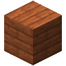
（または 竹の板材、シラカバの板材、サクラの板材、真紅の板材、ダークオークの板材、ジャングルの板材、マングローブの板材、オークの板材、ペールオークの板材、ポプラの板材、トウヒの板材、歪んだ板材）（または 竹の板材、シラカバの板材、サクラの板材、真紅の板材、ダークオークの板材、ジャングルの板材、マングローブの板材、オークの板材、ペールオークの板材、ポプラの板材、トウヒの板材、歪んだ板材）（または 竹の板材、シラカバの板材、サクラの板材、真紅の板材、ダークオークの板材、ジャングルの板材、マングローブの板材、オークの板材、ペールオークの板材、ポプラの板材、トウヒの板材、歪んだ板材）（または 竹の板材、シラカバの板材、サクラの板材、真紅の板材、ダークオークの板材、ジャングルの板材、マングローブの板材、オークの板材、ペールオークの板材、ポプラの板材、トウヒの板材、歪んだ板材） ビール樽 は、材料と液体を寝かせて別の食べ物や液体に変えるブロックです。右クリックで画面を開き、左上の 4 つの枠に材料を入れます。液体のタンクは 4000 mB まで入ります。
ビール樽 は、材料と液体を寝かせて別の食べ物や液体に変えるブロックです。右クリックで画面を開き、左上の 4 つの枠に材料を入れます。液体のタンクは 4000 mB まで入ります。
- 液体は、水入りバケツ・ミルク入りバケツ・ミルク入りの瓶・ハチミツ入りの瓶 などを持って樽を右クリックすると注げます。空の容器を持って右クリックすると取り出せます。
- 画面の容器の枠に容器を入れておくと、タンクの液体がその容器に詰められて、右下の枠に出てきます。
- 樽を壊すと、液体は樽の中に残ったまま持ち運べます。枠の材料はその場に落ちます。
- ホッパーは上から材料を入れ、下や横から完成品を取り出せます。
画面にはレシピ本があり、材料のそろったレシピを選ぶと枠に並べられます。
温度
レシピにはそれぞれ要る温度があり、合わない温度では寝かせが進みません。樽の温度は画面の上のランプで、寒・やや寒・常温・暖・熱の 5 段階で表示されます。
- 樽から 2 ブロック以内の熱源（火のついた焚き火やコンロ、
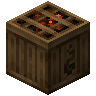
加熱キャスク など）が 1 つにつき温度を上げます。 - 2 ブロック以内の
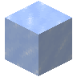
氷・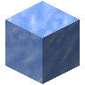
氷塊・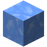
青氷・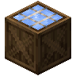
氷箱 が 1 つにつき温度を下げます。 - 雪の降る寒いバイオームでは 1 段下がり、砂漠ほど暑いバイオームでは 1 段上がります。ネザーでは 2 段上がります。
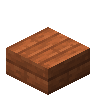
（または 竹のハーフブロック、シラカバのハーフブロック、サクラのハーフブロック、真紅のハーフブロック、ダークオークのハーフブロック、ジャングルのハーフブロック、マングローブのハーフブロック、オークのハーフブロック、ペールオークのハーフブロック、ポプラのハーフブロック、トウヒのハーフブロック、歪んだハーフブロック）（または 竹のハーフブロック、シラカバのハーフブロック、サクラのハーフブロック、真紅のハーフブロック、ダークオークのハーフブロック、ジャングルのハーフブロック、マングローブのハーフブロック、オークのハーフブロック、ペールオークのハーフブロック、ポプラのハーフブロック、トウヒのハーフブロック、歪んだハーフブロック）（または 竹のハーフブロック、シラカバのハーフブロック、サクラのハーフブロック、真紅のハーフブロック、ダークオークのハーフブロック、ジャングルのハーフブロック、マングローブのハーフブロック、オークのハーフブロック、ペールオークのハーフブロック、ポプラのハーフブロック、トウヒのハーフブロック、歪んだハーフブロック）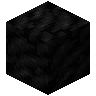
（または 竹の板材、シラカバの板材、サクラの板材、真紅の板材、ダークオークの板材、ジャングルの板材、マングローブの板材、オークの板材、ペールオークの板材、ポプラの板材、トウヒの板材、歪んだ板材）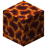
（または 竹の板材、シラカバの板材、サクラの板材、真紅の板材、ダークオークの板材、ジャングルの板材、マングローブの板材、オークの板材、ペールオークの板材、ポプラの板材、トウヒの板材、歪んだ板材）チーズ
ミルクと材料を樽で寝かせると液状のチーズになります。ハニカム を容器の枠に入れると、未熟なチーズとして取り出せます。未熟なチーズは置いておくと熟成し、熟成したチーズはナイフで切り分けられます。
酒
樽では 14 種類の酒と、カラント・ヴェルーカ・ツイステッド・米のワイン、ウォッカを造れます。酒は ジョッキ、ワインとウォッカは ガラス瓶 を容器の枠に入れると詰められます。
酒は満腹でも飲め、満腹度は増えません。飲むと「アルコール酔い」と「中毒」が付き、酒ごとの効果も付きます。酔っているうちにもう一杯飲むと、酔いの段階と時間が足されます。
- アルコール酔い: 画面が揺れます。III からはマウスの動きが遅れ、IV（設定で変えられます）からは自分のチャットや、見える看板・名札の文字が入れ替わります。受けたダメージの一部は橙色のハートとして後払いになり、しばらくすると心停止のダメージとして受けます。III からは凍えません。
- 中毒: 食べ物で満腹度は増えますが、隠し満腹度が増えません。満腹度のバーが揺れて表示されます。
- 激怒: 近接攻撃を当てるたびに攻撃速度が上がり、4 回まで重なります。
- 甘い心: 空腹度に関係なく、隠し満腹度を使って体力を回復します。
ミルク入りの瓶 と ホットココア は有害な効果を 1 つ消しますが、アルコール酔いは消えません。
熟成樽
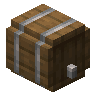
熟成樽 は、ワインに蒸留物を加えて寝かせるブロックです。真ん中にワインを入れると、そのワインがまだ受け入れられる数だけ、周りの 8 つの枠が開きます。
- 中身を変えずに 6000 tick（5 分）置くと 1 回熟成し、ワインの効果がそれぞれ 1 段だけ強くなり、蒸留物の効果が加わります。
- 蒸留物には、
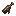
ブランデー・アクア・ヴィテ（酔いが強くなる）、ポーション（その効果が加わる）、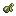
吐き気のチンキ（泡立つ）、おいしいチンキ（すぐ飲める）があります。 - ツイステッドワインは、蒸留物 1 つにつき半々の確率で悪い効果も 1 つ加わります。
- もう熟成できなくなったワインはレア度が上がります。
- ホッパーは上からワインと蒸留物を、横から蒸留物を入れ、下から熟成したワインを取り出します。
オールドワイン は、すでに熟成した、独自の効果を持つワインです。廃坑・古代都市・ダンジョン・要塞・試練の間・森の洋館のチェストに 10 個に 1 個の割合で入っています。
ラベル
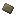
3形は自由ラベル は紙 3 枚とハニカムから 3 枚作れ、革の防具のように染められます。手に持って使うと、書く文字と、作者を表示するか、写しかどうかを表示するか、ポーションの効果を隠すかを決める画面が開きます。インベントリでラベルを持ってアイテムに右クリックするか、アイテムを持ってラベルに右クリックすると、そのアイテムにラベルが貼られ、名前のすぐ下に表示されます。
ボトルラック
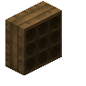
ボトルラック には、正面をクリックした位置にワインを 1 本ずつ、9 本まで置けます。素手で右クリックすると取り出せます。正面にもう 1 つのボトルラックを使うと 1 ブロックいっぱいの大きさになり、コンパレーターで中身の数を測れます。瓶にはワインの種類と、熟成の具合、ラベルが表れます。
樽のレシピ
樽のレシピ（27 件）
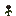
1000 mB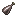
1000 mB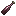
1000 mB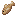
（または 生鮭、熱帯魚、鱈の切り身、鮭の切り身）（または 生鮭、熱帯魚、鱈の切り身、鮭の切り身）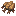
2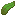
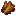
2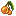
1000 mB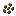
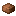
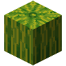
1000 mB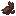
3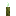
1000 mB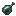
1000 mB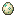
1000 mB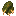
2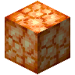
1000 mB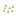
1000 mB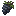
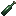
1000 mB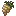
1000 mB